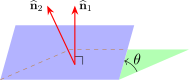
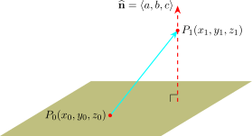

4.9 Planes
A plane in space is determined by a point \(P_0(x_0,y_0,z_0)\) in the plane and a vector \(\widehat {\textbf {n}}\) that is orthogonal to the plane. This orthogonal vector \(\widehat {\textbf {n}}\) is called a normal vector. Let \(P(x,y,z)\) be an arbitrary point in the plane, and let \(\overline {r}_0\) and \(\overline {r}\) be position vectors of \(P_0\) and \(P\). i.e \(\overline {r}_0 = \overrightarrow {OP}\) and \(\overline {r} = \overrightarrow {OP}\). Then the vector \(\overline {r} - \overline {r}_0\) is represented by \(\overrightarrow {P_0P}\). The normal vector \(\hat {\textbf {n}}\) is orthogonal to every vector in the given plane. In particular \(\widehat {\textbf {n}}\) is orthogonal to \(\overline {r} - \overline {r}_0\) and so we get \(\widehat {\textbf {n}}\cdot (\overline {r} - \overline {r}_0) = 0\) or \(\widehat {\textbf {n}}\cdot \overline {r} = \widehat {\textbf {n}} \cdot \overline {r}_0\) which is called the vector equation of the plane.
If we write \(\widehat {\textbf {n}} = a\textbf {i} + b \textbf {j} + c\textbf {k}\hspace {0.2cm}, \hspace {0.2cm} \overline {r} = x\textbf {i} + y \textbf {j} + z\textbf {k} \hspace {0.2cm} , \hspace {0.2cm}\overline {r}_0 = x_0\textbf {i} + y_0 \textbf {j} + z_0\textbf {k}\). Then we get \[\langle a , b, c \rangle \cdot \langle x - x_0 , y - y_0 , z - z_0\rangle = 0\] \[a(x - x_0) + b(y - y_0) + c(z - z_0) = 0\] which is the scalar of the plane passing through \((x_0,y_0,z_0)\) and having normal vector \(\langle a, b, c\rangle \) \[ax + by + cz = ax_0 - by_0 -cz_0=0\]
\[\text {or}\hspace {0.3cm} ax + by + cz + d = 0\] which is the general equation of a plane with normal vector \(\widehat {\textbf {n}} = a\textbf {i} + b\textbf {j} + c\textbf {k}\).
- 1.
- Find an equation of the plane through a point \((2,4,-1)\) with normal vector \(\hat {\textbf {n}} = \langle 2,3,4\rangle \).
- 2.
-
- (a)
- Find the angle between the planes \(x + y + z = 1\) and \( x - 2y + 3z = 1\).
- (b)
- Find the symmetric equation for the line of intersection \(L\) of these two planes.
- 3.
- Find a formula for the distance \(D\) from a point \(P_1(x_1,y_1,z_1)\) to the plane, \[ax + by + cz = 0\]
Solution.
Part 1
\begin {align*} \text {Equation}:\hspace {0.5cm} a(x - x_0) + b(y - y_0) + c( z - z_0) & = 0\\ 2(x - 2) + 3(y - 4) + 4(z + 1) & = 0\\ 2x - 4 + 3y -12 + 4z + 4 & = 0\\ 2x + 3y + 4z & = 0 \end {align*}
Two planes are parallel if their normal vectors are parallel. e.g the planes \(x + 2y - 3z = 4\) and \(2x + 4y -6z = 3\) are parallel since \(\widehat {\textbf {n}_1} = \langle 1,2,3\rangle \) and \(\widehat {\textbf {n}_2} = \langle 2, 4, -6\rangle \) and \(\widehat {\textbf {n}_2} = 2\widehat {\textbf {n}_1}\) or \(\widehat {\textbf {n}_1} =\dfrac {1}{2} \widehat {\textbf {n}_2}\).
It two planes are not parallel then they intersect in a straight line and the angle between the planes is defined as the acute angle between their normal vectors.

Part 2
- 1.
- From equations \(\hat {\textbf {n}_1} = \langle 1,1,1\rangle \) and \(\hat {\textbf {n}_2} = \langle 1, -2, 3\rangle \) \[ \cos \theta = \frac {\hat {\textbf {n}_1}\cdot \hat {\textbf {n}_2}}{ \left |\textbf {n}_1\right |\left |\textbf {n}_2\right | } = \frac {1 - 2 + 3}{\sqrt {3}\cdot \sqrt {14}} = \frac {2}{\sqrt {42}}\] \[\implies \hspace {0.5cm} \theta = \cos ^{-1}\Bigg ( \frac {2}{\sqrt {42}}\Bigg )\]
- 2.
- First, we find a point on \(L\) when \(z = 0\) then \(x + y = 1\) and \(x - 2y = 1\)
\(\implies x = 1\hspace {0.2cm}, \hspace {0.2cm} y = 0\). So \(P(1,0,0)\) lies on \(L\). Now since \(L\) lies on both planes, it is perpendicular to both \(\hat {\textbf {n}_1}\) and \(\hat {\textbf {n}_2}\). Thus a vector \(\overline {V}\) parallel to \(L\) is given by \(\overline {V} = \hat {\textbf {n}_1}\times \hat {\textbf {n}_2} = 5\textbf {i} - 2\textbf {j} -3\textbf {k}\)Symmetric equations of \(L\), \(\displaystyle {\frac {x - 1}{5} = \frac {y}{-2} = \frac {z}{-3}}\)
Part 3

Let \(P_0(x_0,y_0,z_0)\) be any point in the given plane and let \(\underline {b}\) be the vector corresponding to \(\overline {P_0P_1}\). Then \[\underline {b} =\langle x_1 - x_0 , y_1 - y_0 , z_1 - z_0 \rangle \] From the figure, we see that the distance \(D\) from \(P_1\) to the plane is equal to the absolute value of the scalar projection of \(\underline {b}\) onto \(\widehat {\textbf {n}} = \langle a, b, c\rangle \). i.e
\begin {align*} D & = \left |\text {Comp} _{\widehat {\textbf {n}}}\hspace {0.1cm} \underline {b}\right | = \frac { \left |\widehat {\textbf {n}}\cdot \underline {b}\right | }{\left |\widehat {\textbf {n}}\right | }\\ & = \frac { \left |a(x_1-x_0) + b (y_1 -y_0) + c(z_1 -z_0)\right | }{\sqrt {a^2 + b^2 + c^2}}\\ & = \frac {\left |ax_1 + by_1 + cz_1 - (ax_0 + by_0 + cz_0)\right | }{ \sqrt {a^2 + b^2 + c^2}} \end {align*}
But \(P(x_0,y_0,z_0)\) lies on plane \(\implies \hspace {0.5cm} ax_0 + by_0 + cz_0 = 0\) \[ax_0 + by_0 + cz_0 = -d\]
\[\implies \hspace {0.5cm} D = \frac {\left |ax_1 + by_1 + cz_1 + d\right | }{ \sqrt {a^2 + b^2 + c^2}}\]
Questions on this section
Stuck on something here? Ask below and it stays attached to this topic.